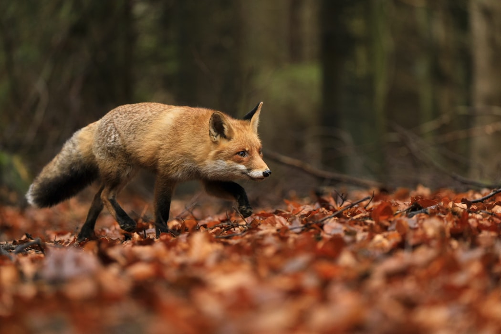
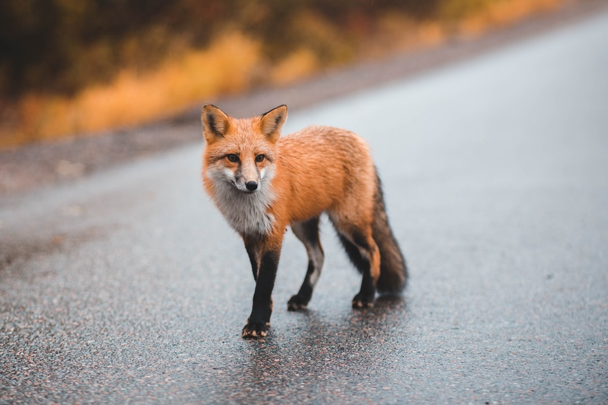

Cáo là tên gọi để chỉ một nhóm động vật, gồm có khoảng 27 loài (trong đó 12 loài thuộc về chi Vulpes hay ''cáo thật sự'') với kích thước từ nhỏ đến trung bình, thuộc họ Chó (Canidae), với đặc trưng là có mõm dài, hẹp, đuôi rậm, mắt xếch và tai nhọn. Loài cáo phổ biến và phân bố rộng rãi nhất trong số các loài cáo là cáo đỏ (Vulpes vulpes), mặc dù các loài khác nhau cũng được tìm thấy trên gần như mọi châu lục. Sự hiện diện của các động vật ăn thịt dạng cáo trên toàn cầu đã làm cho hình tượng của chúng xuất hiện trong nhiều câu chuyện của văn hóa dân gian của nhiều dân tộc, bộ lạc hay các nhóm văn hóa khác.
Phần lớn các loài cáo sống 2 đến 5 năm do bị săn bắn. Trong môi trường nuôi nhốt, chúng có thể sống tới 10 năm hoặc hơn thế. Các loài cáo nói chung có kích thước nhỏ hơn các thành viên khác trong họ Chó, chẳng hạn như sói xám, chó rừng hay chó nhà. Cáo đực cân nặng trung bình khoảng 5,9 kg còn cáo cái nhẹ hơn, trung bình chỉ khoảng 5,2 kg (tương ứng với 13 và 11,5 lb). Các đặc trưng kiểu cáo khác thường bao gồm mõm dài kiểu cáo ("mặt cáo") và đuôi rậm. Các đặc trưng tự nhiên khác thay đổi theo môi trường sống của chúng. Ví dụ, cáo Fennec (và các loài cáo khác thích nghi với cuộc sống trong sa mạc, như cáo Kit) có tai to và bộ lông ngắn, trong khi cáo Bắc cực lại có tai nhỏ và bộ lông dày để giữ ấm cho chúng.
Một ví dụ khác là cáo đỏ, thông thường có bộ lông màu nâu vàng điển hình, đuôi thông thường kết thúc bằng vệt lông trắng.
Không giống như các loài khác trong họ Canidae, cáo thường không tụ tập thành bầy, dù đôi khi chúng làm như vậy. Thông thường, chúng là động vật sống đơn lẻ, những kẻ kiếm ăn cơ hội, săn bắt các con mồi sống (đặc biệt là động vật gặm nhấm nhỏ). Sử dụng kỹ thuật tấn công kiểu chộp được thực hiện từ khi chúng còn non, chúng có khả năng giết chết con mồi rất nhanh. Cáo cũng ăn các loại thức ăn khác, từ châu chấu tới hoa quả và các loại quả mọng.
Cáo nói chung cực kỳ thận trọng trước sự hiện diện của con người và không được thuần hóa, nuôi dưỡng như những con vật nuôi (trừ cáo Fennec); tuy nhiên, cáo bạc thuần hóa đã được thuần hóa thành công tại Nga sau 45 năm thực hiện chương trình nhân giống chọn lọc. Việc nhân giống chọn lọc này cũng tạo ra các đặc điểm tự nhiên và hành vi dường như là thường xuyên thấy có ở chó, mèo và các động vật đã thuần hóa khác: thay đổi màu lông, tai mềm và đuôi cong.
Mặc dù trước đây được cho là loài đơn độc, có bằng chứng cho thấy gấu mèo Bắc Mỹ tham gia vào các tập tính xã hội cụ thể theo giới tính. Các con cái có quan hệ họ hàng thường xuyên chia sẻ một khu vực chung, trong khi các con đực không có quan hệ họ hàng sống cùng nhau trong các nhóm lên tới bốn con để duy trì vị thế của chúng với những con đực xa lạ trong mùa giao phối cũng như trước những kẻ xâm lược tiềm năng khác. Kích thước phạm vi sinh sống là khác nhau ở bất cứ nơi nào, từ 3 ha (7 mẫu Anh) cho các con cái ở vùng đô thị cho đến 50 km2 đối với các con đực trong vùng thảo nguyên (20 dặm vuông). Sau một thời gian mang thai khoảng 65 ngày, 2-5 con non được sinh ra vào mùa xuân. Các con non sau đó được con mẹ nuôi dưỡng cho đến khi phân tán vào cuối mùa thu. Mặc dù người ta biết rằng gấu mèo Mỹ nuôi nhốt đã đạt tuổi thọ hơn 20 năm, tuổi thọ trung bình trong tự nhiên chỉ 1,8 đến 3,1 năm. Trong nhiều khu vực, việc săn bắn và chấn thương do xe cộ cán là hai nguyên nhân gây tử vong phổ biến nhất.
Cáo dễ dàng được tìm thấy trong các đô thị và các khu vực có cày cấy gieo trồng (phụ thuộc vào loài) và dường như thích nghi khá tốt với sự hiện diện của con người.
Cáo đỏ được du nhập vào Úc, nơi thiếu vắng những kẻ ăn thịt tương tự và cáo du nhập này đã săn các con mồi là động vật hoang dã bản địa, với một số loài bị dẫn tới điểm tuyệt chủng. Sự du nhập tương tự đã diễn ra trong thế kỷ 17 tới 18 tại vùng ôn đới Bắc Mỹ, trong đó cáo đỏ châu Âu (Vulpes vulpes) được người ta đưa tới thả tại các thuộc địa để phát triển thú vui săn cáo, nơi họ đã tàn sát quần thể cáo đỏ Mỹ thông qua việc săn bắn tích cực hơn cũng như thông qua sinh sản mạnh hơn của quần thể cáo đỏ châu Âu. Lai giống với cáo đỏ Mỹ, các đặc điểm của cáo đỏ châu Âu cuối cùng đã lan tỏa khắp bộ gen, làm cho cáo đỏ châu Âu và Mỹ hiện nay là gần như đồng nhất.
Một số loài cáo khác không sinh sản mạnh như cáo đỏ, và là loài nguy cấp trong môi trường bản địa của chúng. Đáng chú ý trong số này là cáo ăn cua (Cerdocyon thous) và cáo tai dơi châu Phi (Otocyon megalotis). Các loài cáo khác, như cáo Fennec (Vulpes zerda), là không nguy cấp.
Cáo từng được dùng thành công trong việc kiểm soát dịch hại tại các trang trại trồng hoa quả, trong đó chúng để lại quả còn nguyên vẹn[2].
Các sử gia tin rằng cáo từng được đưa tới các môi trường không bản địa từ rất lâu trước kỷ nguyên xâm chiếm thuộc địa. Ví dụ đầu tiên về việc du nhập cáo như vậy bởi con người vào môi trường sống mới cho chúng dường như là tại Cộng hòa Síp thời kỳ đồ đá mới. Các hình khắc trên đá thể hiện những con cáo được tìm thấy trong các khu định cư sớm tại Göbekli Tepe ở miền đông Thổ Nhĩ Kỳ.